I've written very little Javascript up to this point, but now I've found a use case for some. The One-Off project cards I've added to the homepage would be improved by a filtering system. Let's say by default the page shows the last 10 added One-Offs, but there are some buttons the user can flick to filter the cards by specific categories (tags?). Maybe Radio, Theatrical, Electronics, etc. Not sure if this list will be hard-coded or auto-generated - hard coded to start, for sure, and then we can look into generation.
Since this is going to be a hardcoded example to start, I'll embed a script tag right inside my Index.html template for now. I'm also going to take the "first 5" limiter out of the range function that displays the cards - I'll want all the cards to load (probably), then constrain which ones are actually visible with Javascript.
Alright, well let's see about getting a little JQuery going. I'll add
<script src="https://ajax.googleapis.com/ajax/libs/jquery/3.5.1/jquery.min.js"></script>
To the head tag in my baseof.html template to include it. Then, in my index template, I'll use a little script tag:
Let's see about finding all the cards on the page. This Stack Overflow answer suggests doing something like this with data-roles, which seem like an easy way of grabbing DOM elements. And since I'm generating an article per one-off, I can add the data-role="small-card" param to each card by adding it to the summary.html template for the one-offs. I think. Let's try something like:
With the help of the JQuery Documentation and the W3 Schools JQuery reference, I can use a JQuery selector to grab, for example, all the articles whose content contains the word "Meter" (since I happen to have two of them) and hide them like so:
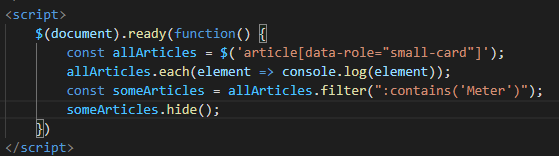
And, it hides those two cards! Progress! (Although I note that the list page "Smalls" is also included in there...)
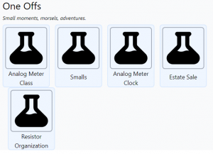
So, now we need some buttons that dynamically do the same thing based on... something. So let's start by adding an "All" button that makes everything visible. I'll throw a couple of addition buttons next to it for now, just for formatting's sake
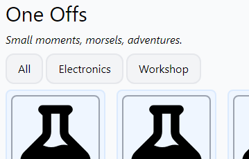
So, let's get that All button to do a thing. I started by creating a couple of hard-coded classes that would do the filtering I wanted - one specifically for the "All" button (show everything) and one that would contain only the cards that contained the word "Meter".
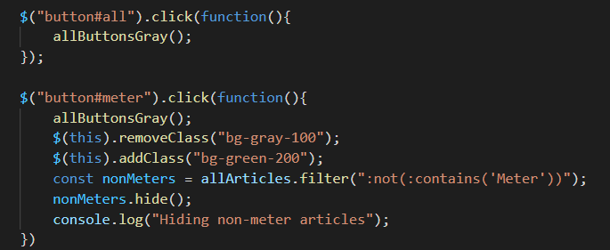
Then I refactored that code into a single function that looks at the ID of when the button was clicked, and filters the one-off cards based on that:
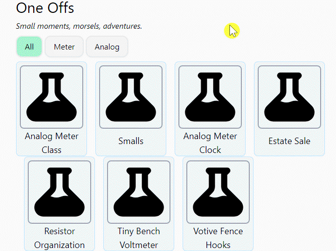
(This is also the point when I discovered GifCam - to enable Gif representations of my progress as things get more interactive.)
So now... how to dynamically generate this list of tags?
Let's start with some light theft. This post from the Hugo discord has a solution for just generating a list of all the tags with their number of tagged items.
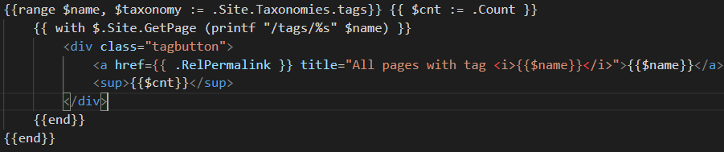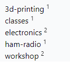
So, how to turn this into buttons? Well, first I can take out the parts that use the Count variable (though maybe I'll want to add that back in later). And we'll turn that href into a button and remove the div, like so:
And that generates the buttons, at least.
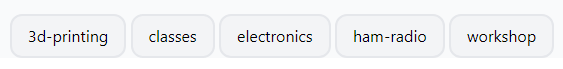
And because our earlier script applies to any button on the page, it's already filtering on the cards based on these tags! Sadly, the cards don't have that tag information yet, so all of those buttons blow away all the cards. But I'll bet we can fix that by editing the summary.html renderer for those cards.
After a bit of trouble because Hugo (Go?) templating interprets single-quotes as instructions to translate characters into their Ascii (Unicode?) equivalents, and some funking around with how the Jquery interacts with the (invented) data-tags attribute, and the unfortunate behavior of the .attr() function to return undefined if the block doesn't have that attribute, I came up with:
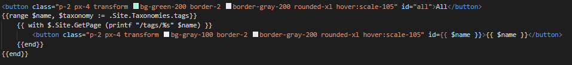
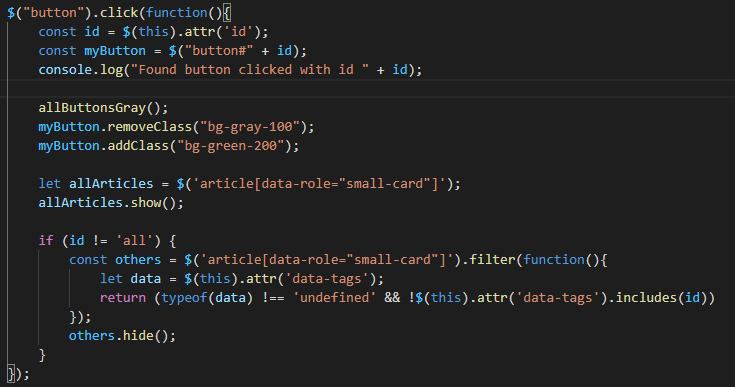
This does mean that all the tags I use in my frontmatter have to have the same cannonical form as Hugo's tag pages, ie all lowercase, no spaces (hyphens ok). But that's fine for now, I can figure out how to style the text later.
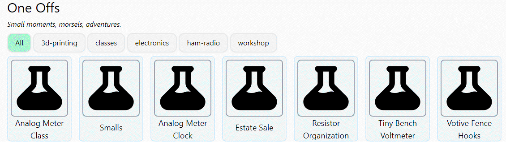
Interestingly, the "Smalls" list page is included in all of the current filters, which isn't desirable. But I can fix this by just not rendering that card in the first place, by wrapping the {{ .Render "summary" }} statement that actually renders the small cards in a {{ if .IsPage }}.
There's still some slightly funky things happening with the spacing of the small cards, but I'll figure that out at some point.
asdsadsa